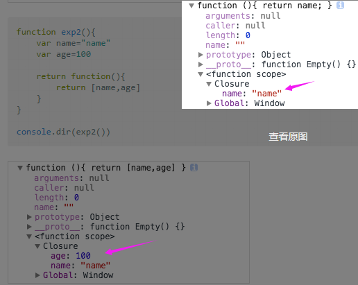

利用js的垃圾回收原理来理解闭包(Closure)问题：
http://www.cnblogs.com/tyhmj/archive/2012/02/29/2373626.html
内存泄露以及循环引用解析：
http://www.2cto.com/kf/201507/417319.html
彻底弄懂js循环中的闭包问题:
http://www.cnblogs.com/hljmly/p/5448134.html
闭包特性：
------------------------------------
* 函数嵌套函数
* 内部函数可以引用外部函数的参数和变量
* 此参数和变量不会被垃圾回收机制所回收
好处：
------------------------------------
* 希望一个变量能长期驻扎在内存当中
* 避免全局变量的污染
* 私有成员的存在
用法：
------------------------------------
* 3-1 模块化代码
* 3-2 在循环中直接找到对应元素的索引
注意：
------------------------------------
* 4-1 ie下会引发内存泄漏
实例：
------------------------------------
/*a为全局变量，可累加*/
var a=1;
function aaa(){
a++;
alert(a);
}
aaa(); //2
aaa(); //3
alert(a); //能访问
————————————————————————————————————————————————————————————
/*为避免全局变量的污染，a为局部变量，但不能累加*/
function aaa(){
var a=1;
a++;
alert(a);
}
aaa(); //2
aaa(); //2
alert(a); //不能访问
————————————————————————————————————————————————————————————
/*a为局部变量，同时也可以累加，这就是闭包的好处*/
function aaa(){
var a=1;
return function(){
a++;
alert(a);
}
}
var b=aaa();
b(); //2
b(); //3
alert(a); //不能访问
——————————————————————————————————————————————————————————3-1——
/*把上一例的闭包代码模块化*/
var aaa=(function(){
var a=1;
return function(){
a++;
alert(a);
}
})();
aaa(); //2
aaa(); //3
—————————————————————————————————————————————————————————— ——
/*模块化代码的一种模式*/
var aaa=(function(){
var a=1;
function bbb(){
a++;
alert(a);
}
function ccc(){
a++;
alert(a);
}
return{
b:bbb, //私有成员
c:ccc
}
})();
aaa.b(); //2
aaa.c(); //3
alert(a); //不能访问
alert(bbb); //不能访问
alert(ccc); //不能访问
——————————————————————————————————————————————————————————3-2——
<li>1111111111</li><li>1111111111</li><li>1111111111</li>
window.onload=function(){
var aLi=document.getElementsByTagName("li");
for(var i=0;i < aLi.length;i++){
aLi[i].onclick=function(){ //事件执行前for循环已执行完，i已累加成2了
alert(i);
}
}
}
—————————————————————————————————————————————————————————— ——
window.onload=function(){
var aLi=document.getElementsByTagName("li");
for(var i=0;i < aLi.length;i++){
(function(i){
aLi[i].onclick=function(){
alert(i);
}
})(i);
}
}
—————————————————————————————————————————————————————————— ——
window.onload=function(){
var aLi=document.getElementsByTagName("li");
for(var i=0;i < aLi.length;i++){
aLi[i].onclick=(function(i){
return function(){
alert(i);
}
})(i);
}
}
——————————————————————————————————————————————————————————4-1——
//内存泄漏：变量没被回收而一直驻扎在cpu里占用内存，只有关闭浏览器才会被释放
//导致原因：闭包内保存了外部变量的引用，而变量本身又引用了闭包，导致循环引用
window.onload=function(){
var oDiv=document.getElementById("div1");
oDiv.onclick=function(){
alert(oDiv.id);
}
}
—————————————————————————————————————————————————————————— ——
//防止内存泄漏方法一：
window.onload=function(){
var oDiv=document.getElementById("div1");
oDiv.onclick=function(){
alert(oDiv.id);
}
window.onunload=function(){
oDiv.onclick=null;
}
}
—————————————————————————————————————————————————————————— ——
//防止内存泄漏方法二：
window.onload=function(){
var oDiv=document.getElementById("div1");
var id=oDiv.id;
oDiv.onclick=function(){
alert(id);
}
oDiv=null;
}
————————————————————————————————————————————————————————————
Javascript内存回收机制:
--当函数调用完之后内部的变量所占用的内存控件就被释放掉
--如果一个对象不再被引用，那么这个对象就会被GC回收。如果两个对象互相引用，而不再被第3者所引用，那么这两个互相引用的对象也会被回收。
--闭包调用时执行完后闭包还是被外部的变量所引用，所以此闭包没被回收，它所引用的外部变量也就没被释放了?
————————————————————————————————————————————————————————————
例：
function a(){
var x=10;
console.log("a->x:"+x);
return function b(){
x++;
console.log("b->x:"+x);
}
}
//(1)
var ii=a();
ii();
var jj=a();
jj();
&
//(2)
var ii=a();
ii(); //这执行完后ii等于b()的引用；变量x在b()已有定义并累计到了11
ii(); //此时执行的是上一部最后引用的b()，x累计到12；执行完后ii又再等于b()的引用
---------------------------------
# 测试
function exp1(){
var name="name"
var age=100
return function(){
return name;
}
}
console.dir(exp1())
